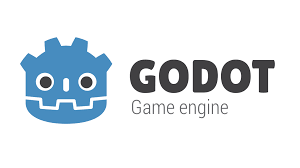

- Unity
- Unreal Engine
- Godot
Godot란 무엇인가?
Godot is a cross-platform, free and open-source game engine released under the MIT license.

Godot is a cross-platform, free and open-source game engine released under the MIT license.
It was initially developed by Argentine software developers Juan Linietsky and Ariel Manzur for several companies in Latin America prior to its public release.
The development environment runs on multiple operating systems including Linux, BSDs, macOS, and Microsoft Windows.
It is designed to create both 2D and 3D games targeting PC, mobile, and web platforms.
It can also be used to create non game software, including editors.